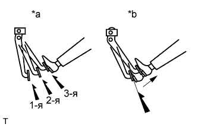
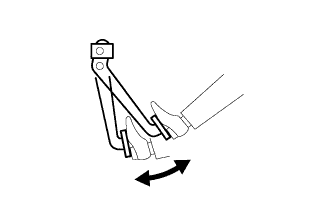
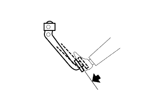

УСИЛИТЕЛЬ ТОРМОЗНОЙ СИСТЕМЫ > ПРОВЕРКА БЕЗ СНЯТИЯ С АВТОМОБИЛЯ |
| 1. ПРОВЕРЬТЕ УСИЛИТЕЛЬ ТОРМОЗНОЙ СИСТЕМЫ |
Проверка герметичности
|  |
Запустите двигатель и остановите его через 1–2 минуты. Несколько раз медленно нажмите на педаль тормоза.
Если педаль может быть нажата до упора в пол в первый раз, а при втором и третьем нажатии ее ход уменьшается, усилитель тормозной системы герметичен.
| *a | ПРАВИЛЬНО |
| *b | НЕПРАВИЛЬНО |
Нажмите педаль тормоза при работающем двигателе, а затем остановите двигатель, удерживая педаль тормоза нажатой.
Если остаточный ход педали тормоза не изменяется при удержании ее в течение 30 секунд, усилитель герметичен.
Проверка работы
|  |
Несколько раз нажмите на педаль тормоза при выключенном зажигании и убедитесь, что остаточный ход педали тормоза не изменяется, когда она нажата.
|  |
Нажмите и удерживайте педаль, а затем запустите двигатель.
Если педаль немного опускается, система работает нормально.